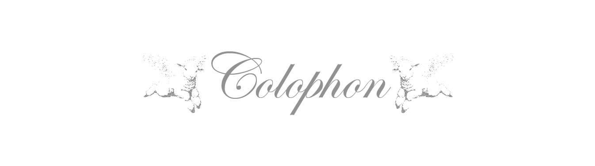

The tragic story of the sacrificial lamb is one we have all heard at some point. It is a story about a
pure, innocent, and docile creature, sacrificed in the name of the greater good. Willingly led towards
the altar, happy to give her life, for the sins of others. The focus in these stories, however, is not
on the lamb but on her usefulness. She is merely an object used for the redemption of sinners.
However, more recently, in social media culture, the aesthetic of this tragic fate has re-emerged, but
this time in the context of feminism. The sacrificial lamb is now
something for women to compare themselves to, either as a costume or as a way to give meaning to the
pain that is so commonly associated with being a woman today.
Through a combination of social media content, religious paintings, theoretical analysis, and personal
reflection, this essay examines what happens when suffering
becomes more recognizable as an image than as a lived
reality. Through the themes of suffering as aesthetics, tactical passivity, and madness as rebellion, it
argues that the
continued relevance of the sacrificial lamb reveals how deeply femininity is associated with pain,
innocence, and
sacrifice.
One would think the idea of being a sacrificial lamb would seem like a horrific fate. Weak, docile, and
with a life so unimportant that any personal goals or agency would have to be set aside for the
well-being of others. A blank slate of purity for people to project their dreams onto. A promise of
unavoidable suffering and a violent end.
Yet social media is flooded with content of women comparing themselves to this exact fate. They are
dressing themselves in innocent, cute, and aesthetically pleasing lamb costumes, with artificial blood
dripping from their necks, a perfect mix of pure innocence and horrific gore. Dark, melancholic music is
playing in the background, accompanied by messages of suffering in large, bold letters.
When scrolling through TikTok, in the midst of a mental breakdown, the sacrificial lamb seems to
infiltrate my feed. Horrifically beautiful. Her innocence shining through my screen. For a brief moment,
my own feelings seem to have a greater purpose. I’m going through all this for a reason. When a video
comparing the pain of women to a sacrificial lamb appears, it is in this moment that it does not seem
silly. I can understand it. I would much rather be suffering as a sacrifice than for no reason at all.
It doesn’t matter that it’s not accurate for my situation, it temporarily makes me feel better. I
continue down the rabbit hole of aestheticized depression, hopelessness, and horror. It’s all depicted
in a way that allows me to keep an emotional distance. It becomes an escapism, letting me focus on the
image of pain rather than my own real feelings. Gradually, the imagery and aesthetics become more
bizarre, but I’m used to it now. The repetition of content gives me the impression that this is what
pain and tragedy look like. This is what it’s supposed to look like.
Through the never-ending stream of content based on the sacrificial lamb, one specific painting keeps
popping up.
I am of course talking about The Adoration of the Mystic Lamb
Ghent Altarpiece. Sint-Baafskathedraal Gent.
,by Hubert and Jan van Eyck. This painting
depicts a serene lamb being sacrificed as a public spectacle, surrounded by saints, martyrs,
worshippers, and angels.
“The Ghent Altarpiece captures the essence of Christianity. Christ sacrificed himself like a lamb in
order to save mankind. That’s why the whole world comes to worship the innocent animal in
gratitude.”
What Is Depicted in the Ghent Altarpiece. Visit Gent
Through this painting, the suffering of the lamb
becomes a performance to be admired. She is beautiful because she suffers, and her sacrifice serves a
greater purpose. During the time in which it was painted, Christian theology
associated pain with purity, martyrdom, and religious
devotion. The altarpiece reflects these ideas by transforming the slaughter of this innocent animal into
something serene and spiritually meaningful. However, the real horror and violence are not visible in
the painting. The lamb is dressed up for sacrifice, and the violence is controlled and beautiful. Much
like the videos circulating on social media, it allows for an emotional distance and a comfortable way
to view
slaughter.
With sore eyes, a tension headache, and an almost unhealthy obsession, I’m confronted by seemingly
endless
versions of the altarpiece on TikTok. The videos further aestheticize the lamb by adding pink bows,
heart necklaces, bedazzled crosses, and lace. Accompanied by blood, tears, screams, injuries, and
bondage. The painting seems to be linked directly to the female experience, implying that suffering is
not only necessary but unavoidable. As written by Leslie Jamison in Grand Unified Theory of Female Pain,
“The moment we start talking about wounded women, we risk transforming their suffering from an
aspect of the female experience into an element of the female constitution – perhaps its finest,
frailest consummation”
Jamison, Leslie. The Grand Unified Theory of Female Pain.
Suffering seems to be directly associated with the beauty and sensitivity of women, instead of
recognizing their complexity and depth. This is especially clear in the film industry and in the
portrayal of female characters. An example of this is the movie Blonde by Andrew Dominik, which
reduces
the life of Marilyn Monroe to her trauma. She is portrayed as a helpless, wounded victim in a way that
fetishizes her pain, instead of focusing on her strength. The comparison between women and sacrificial
lambs in social media might further associate womanhood with vulnerability, pain, and
emotional sacrifice.
We seek deeper meaning in our experiences to make them more bearable. It’s in my moments of emotional
distress, that I am the most likely to romanticise my routines. This gets them done, and I feel better
about the process. It is because of this, that I can sort of understand the wish to romanticize
suffering online. With big eyes, pouched lips, and gentle tears, pain and sadness is undeniably
beautiful. However, the main focus seems to be on aesthetics, rather than confronting, or even talking
about real feelings. Through social media, misery can be designed, changed, and improved. This is then
repeated so many times that aestheticized pain becomes the norm. A beautiful wall of aesthetic
melancholy, can hide anyone, anything, even real feelings. Creating an emotional distance so large,
empathy and support is no longer reachable. Susan Sontag had similar theories in her book Regarding
the
Pain of Others,
Sontag, Susan. Regarding the Pain of Others. Farrar, Straus and Giroux, 2003.
which was a commentary on the circulation of war photography. She argued that the
repeated exposure to these types of photographs would desensitize the audience rather than cause
compassion. The repeated circulation of content about the suffering of women might produce a similar
effect, especially if it’s aestheticized. The audience becomes desensitized to the real experiences of
women as the focus instead shifts to the visuals of pain.
While it can be tempting to embrace the aesthetics of suffering, my own pain has never been visually
pleasing. A brief moment of delusion might allow me to think that my struggles have greater purpose, but
when this disconnects from reality, I somehow feel more isolated and alone. Especially when coupled with
experiences of not being taken seriously regarding pain and medical care. The girl who cried
pain,
Hoffmann, D. E., & Tarzian, A. J. (2001). The girl who cried pain: a bias against women in
the
treatment of pain. The Journal of Law, Medicine & Ethics, 29(1), 13–27.
a study on medical treatment based on gender, perfectly highlights this. This study points out a trend
in
which women, on average, receive less aggressive pain treatments, despite experiencing more frequent and
severe pain. If the suffering of women continues to be aestheticized online, it might reinforce the
cultural dismissal of women’s pain.
Pushing my feelings further down on each scroll, I continue down the rabbit hole of romanticized tragedy
and suffering. I’m feeling drained now, almost passive, blissfully
distant from my previously very real feelings. I notice another
painting circulating, quite different from the Adoration of the Mystic Lamb, both in style and
message.
This painting is called, Agnus Dei,
Zurbarán, Francisco de. Agnus Dei. Painting, c. 1635–1640.
by Francisco de Zurbarán. Here, the lamb is tied up, helpless, and
awaiting sacrifice. Instead of a public spectacle, this painting displays the anticipation of violence
in a much more intimate and emotional way.
“The animal is tame, ‘listless’ might be a better word; its left eye is not completely closed, and
it dozes off a bit. It is not a cheerful scene, and I inevitably feel pity”
Een tragikomisch offer. De Groene Amsterdammer.
Instead of romanticizing sacrifice, this painting
focuses on feelings of sadness and guilt about what is going to happen. This is quite a good reflection
of the time period in which it was created, where Catholic art mostly focused on affecting the audience
personally, encouraging religious devotion, as well as evoking feelings of guilt and shame. The lamb is
isolated, hauntingly beautiful, and with a sadness so strong it almost provokes a need to intervene.
The use of this painting in contemporary media, however, feels problematic, especially when compared to
the experiences of women. The lamb is restrained, helpless, and miserable, and using imagery like this
in the context of womanhood might reinforce the association between femininity, passivity, and
helplessness. With round eyes, fluffy ears, and a pained expression, the women in these videos seemingly
perform innocence and passivity. Despite leaving me with a sense of discomfort, I can’t help but wonder
why so many are drawn to expressions like these. Performances of passivity do not only happen within the
context of the sacrificial lamb, but also more generally in social media culture. There is a whole trend
surrounding girlhood, with phrases such as I’m literally just a girl, girl math, and girl
dinner. Some
of this language provoked criticism, claiming that it infantilizes women and causes the already
problematic stereotypes to be further enforced. However, the culture surrounding girlhood could become a
form of tactical passivity, where appearing harmless or innocent becomes a mechanism for survival in
patriarchal society. There is a certain power in being underestimated, and when this happens so often,
why not weaponize it? So blatantly cute and girly, the language used in these trends almost seems to
repel those who fear femininity. This then creates a space where strategies for safety and support can
be shared, that is less likely to be infiltrated by those who want to harm or exploit women.
With a renewed sense of purpose, I start looking into survival mechanisms. Scrolling through videos of
pink knives, bedazzled pepper sprays, and glittery tracking devices, survival almost seems fun. There is
a collectivity in this girlhood culture that makes me feel less alone. Like our shared knowledge, gives
us a more complex understanding of our surroundings. This makes me think of When the Lambs Rise Up
Against the Bird of Prey by Anne Boyer.
In this essay, the predator is described as a being out of touch with his surroundings. He is alone,
focused, and on a
never-ending search for his next dinner. The lamb, however,
is described as having the most complete picture of the world.
In survival, she learns how to recognize the fear in other
lambs, as well as a complex understanding of the bird’s movements and intentions. Through this story,
the lamb is re-framed as a cunning being, who knows how to use her attentiveness and clarity to her
advantage.
While there is comfort to be found in the collectivity of girlhood, it doesn’t feel like enough.
Scrolling through endless content of women sharing safety tips, fills me with a feeling of existential
dread. Living in a state of constant hyper vigilance is exhausting, especially when it is not guaranteed
to help. There is a certain danger in romanticizing survival, because adaptation to harmful systems can
easily be mistaken for empowerment. Becoming better at surviving patriarchal structures does not
necessarily mean becoming free from them. Maybe this is what makes the image of the sacrificial lamb so
unsettling. The lamb survives through attentiveness, caution, and hyper vigilance, but is still tied up
at the altar.
Glued to my phone, I notice that the sacrificial lamb has taken over my feed. What had once been a rare
occurrence, something I could briefly recognize myself in, is now leaving me with a constant feeling of
discomfort and unease. Horrifically beautiful, she almost seems to haunt me. Taking on endless forms.
“i am the sacrificial lamb. my throat slit, bleeding out on your soft white sheets.”
@_rott3n_grl. TikTok.
A new painting catches my attention. It seems to be influenced by Agnus dei, but with drastic
differences in presentation and style. This painting is called The Sacrificial Lamb by Josefa
de Óbidos
Óbidos, Josefa de. The Sacrificial Lamb. Painting.
. During the time in which it was created, religious painting was heavily dominated by men. This makes
Óbidos’s reinterpretation of the lamb particularly interesting. The lamb is surrounded by flowers and
ornamentation, transforming her into something aestheticized and theatrical. Unlike Agnus Dei,
where the
promise of violence seems to hang over the lamb like a dark cloud, Óbidos’s painting almost hides the
suffering beneath beauty and decoration. The lamb is still tied up, and the imminent slaughter is still
clearly visible in the painting, but the contrast between beauty and violence gives the painting an
uncanny feeling. Instead of inviting sympathy or guilt, the lamb begins to feel unsettling and
disturbing.
With shaking hands and shifty eyes, I start looking through the comment section of the videos that seems
to have taken over my life. I immediately notice a lack of sexualizing comments, which is highly unusual
in social media culture. Like the painting by Josefa de Óbidos, the contrast between horror and beauty
seems to cause discomfort rather than fetishization. There was a trend on social media at some point
encouraging women to bark loudly at men who were bothering them in public. Adopting these animal
behaviours in such an obnoxious way seemed to scare the men immensely, causing them to back away in fear
of being associated with such madness. If a woman seems unhinged or mad, her behaviour
becomes
unpredictable and uncontrollable. Maybe the same thing is happening in videos of women dressing like
sacrificial lambs. With fluffy lamb ears on her head, artificial blood dripping from her neck, and an
innocent look in her eyes. The comments on these videos are almost exclusively from other women. It
seems like men are scared to sexualize it, scared to find such madness attractive. By embodying
something so strange and disturbing, femininity seems to change from something desirable into something
unsettling and difficult to control.
Horrifically beautiful, the sacrificial lamb seems to cause a discomfort so strong it repels most, if
not all sexualization. Especially when mixed with femininity and girlhood. This unsettling feeling could
be explained by Julia Kristeva’s theory of abjection. In her book The Powers of Horror,
Kristeva, Julia. The Powers of Horror: An Essay on Abjection. Columbia University
Press, 1982.
she explores how feelings of horror emerge when the categories we use to make sense of the world are
disrupted. Blood, corpses, wounds, and decay become horrifying because they remind us of the fragility
of our bodies. Women dressing like sacrificial lambs are not only embracing the abject through bodily
gore, but also by embodying an animal. By challenging the familiar and expected, these videos provoke
feelings of discomfort and fear. However, the lack of sexualization could be explained by Barbara Creed
in The Monstrous-Feminine.
Creed, Barbara. The Monstrous-Feminine: Film, Feminism, Psychoanalysis. Routledge, 1993.
“The presence of the monstrous-feminine in the popular horror film speaks to us more about male
fears than about female desire or feminine subjectivity.”
The female body is often portrayed as something monstrous in horror through menstruation, sexuality,
pregnancy, and childbirth. Womanhood is represented as something threatening, especially once it escapes
innocence and girlhood. When women embrace horror instead of purity when dressing like sacrificial
lambs, they can no longer be framed as a beautiful victim, thereby rejecting desirability.
With this in mind, maybe dressing like a sacrificial
lamb is the ultimate form of rebellion. With big eyes, pouched lips, and blood dripping from her neck,
she is embodying something disturbing. Something to fear. While this could seem appealing in a brief
moment of confidence, I’m way to socially anxious to actually do it. It takes a specific type of courage
to do things like barking at men or dressing up like sacrificial lambs, even if it is effective as a
form of rebellion in patriarchal society.
With a slight feeling of dread and discomfort, my obsessive scrolling has finally come to an end. The
horrific beauty of the sacrificial lamb seems to haunt my thoughts and leaves me wondering why she keeps
re-emerging throughout history. Her timeless expression allows her to take on many different forms. A
holy martyr, a helpless victim, a cunning survivor, and the ultimate form of rebellion, yet in all these
stories she seems to face the same violent end. This makes me wonder what her next form will be, and
whether her ending will ever change. However, her continued relevance points to how deeply femininity is
still associated with suffering, innocence, and sacrifice.
Final Girl Digital. “The Horror of Girlhood | Explored Through Valerie and Her Week of
Wonders.”
YouTube, 26 May 2023,
//www.youtube.com/watch?v=aLIe_Xt2G1E

Colophon
This research essay was written by Guro Sampson Welander as a part of the BA in Graphic Design at KABK
(Royal Academy of Arts, The Hague) It was written between January and May in 2026.
AI was used for checking grammar, suggestions for synonyms and antonyms, and for brainstorming when
deciding on the structure.
Thank you to Dirk Vis, Simnikiwe Buhlungu, and Thomas Buxó, for guiding me throughout the research
and writing process.
Thank you to Anna Marie Sampson Welander, Suzie Veldhuijzen, Panna Drenkó,
Omid Nemalhabib and Sam Aras for feedback and proofreading.